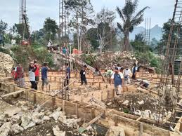
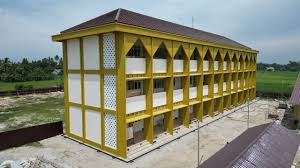
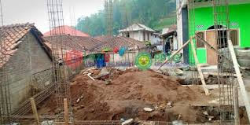

Pondok Pesantren Daarul Shafa memulai pembangunan gedung asrama baru dua lantai yang akan menambah kapasitas penerimaan santri hingga 200 orang. Proyek ini ditargetkan selesai dalam waktu 8 bulan.
Detail Pembangunan
Gedung baru ini akan memiliki:
- 20 kamar asrama ber-AC
- Ruang belajar bersama
- Perpustakaan mini di setiap lantai
- Fasilitas kamar mandi modern



Sumber Dana
Pembangunan ini didanai oleh:
- Donasi masyarakat (60%)
- Bantuan pemerintah (30%)
- Kas pesantren (10%)
"Gedung ini akan menjadi solusi untuk antrean panjang calon santri yang ingin belajar di Daarul Shafa," ungkap Ust. Abdullah, Ketua Panitia Pembangunan.
Progress Pembangunan
Progress per 1 Mei 2022